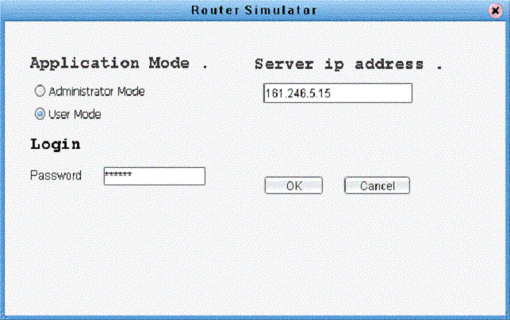
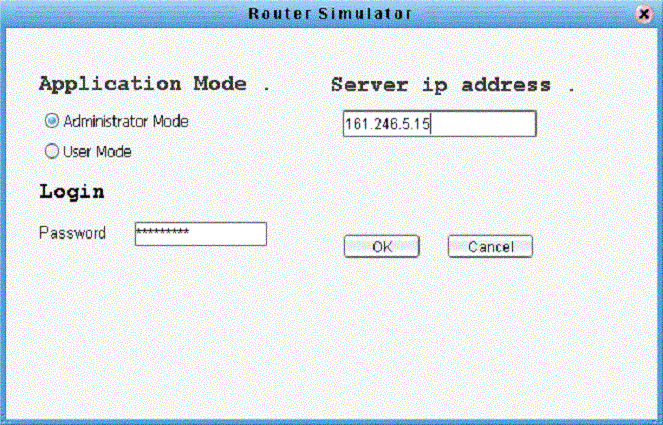
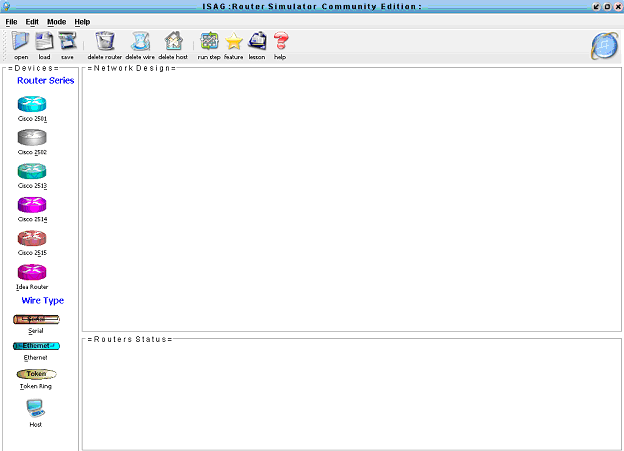

พาสเวิร์ด ให้กับ R1และ R2 โดย User1 จะได้รับพาสเวิร์ดจาก Administrator คนเดียวเท่านั้นส่วน User คนอื่นจะไม่สามารถเข้าไป
ตั้งค่าเราเตอร์ได้
สำหรับโหมดการทำงานทั้งหมดของเราเตอร์สามารถดูได้ที่
Command
| Multiuser | |||||||
| ในบทนี้เป็นการทำงานแบบผู้ใช้หลายคน(Multiuser) โปรแกรมจำลองการทำงานเราเตอร์ มีโหมดการทำงานอยู่ 2 โหมด ได้แก่ | |||||||
| โหมด User และ โหมด Administrator | |||||||
| การใช้งานโหมด User | |||||||
| 1.เปิดโปรแกรมขึ้นมา จะปรากฏ ไดอะล็อกดังรูป ให้เลือกที่ User Mode | |||||||
 |
|||||||
| 2.จะปรากฎหน้าจอของโปรแกรมดังรูป | |||||||
|
|
|||||||
| 3.สิทธิของโหมด User | |||||||
| 3.1 สามารถตั้งค่าต่างๆของเราเตอรได้ | |||||||
| 4.ข้อจำกัดของโหมด User | |||||||
| 4.1 ไม่สามารถสร้างเครือข่ายของเราเตอร์ได้ | |||||||
| 4.2 ไม่สามารถลบเครือข่ายที่สร้างไว้ได้ | |||||||
| การใช้งานโหมด Administrator | |||||||
| 1.เปิดโปรแกรมขึ้นมา จะปรากฏ ไดอะล็อกดังรูป ให้เลือกที่ Administrator Mode | |||||||
|
 |
|||||||
| 2.จะปรากฎหน้าจอของโปรแกรมดังรูป | |||||||
|
 |
|||||||
| 3.สิทธิของโหมด Administrator | |||||||
| 3.1 สามารถตั้งค่าต่างๆของเราเตอรได้ | |||||||
| 3.2 สามารถสร้างเครือข่ายของเราเตอร์ได้ | |||||||
| 3.3 สามารถลบเครือข่ายที่สร้างไว้ได้ | |||||||
| 3.4 สามารถกำหนดสิทธิของ
Userในการตั้งค่าของเราเตอร์ได้ เช่นกำหนดให้ User1สามารถตั้งค่าเราเตอร์ R1และR2
ได้ โดยการตั้งค่า พาสเวิร์ด ให้กับ R1และ R2 โดย User1 จะได้รับพาสเวิร์ดจาก Administrator คนเดียวเท่านั้นส่วน User คนอื่นจะไม่สามารถเข้าไป ตั้งค่าเราเตอร์ได้ |
|||||||
|
สำหรับโหมดการทำงานทั้งหมดของเราเตอร์สามารถดูได้ที่
Command
|
|||||||